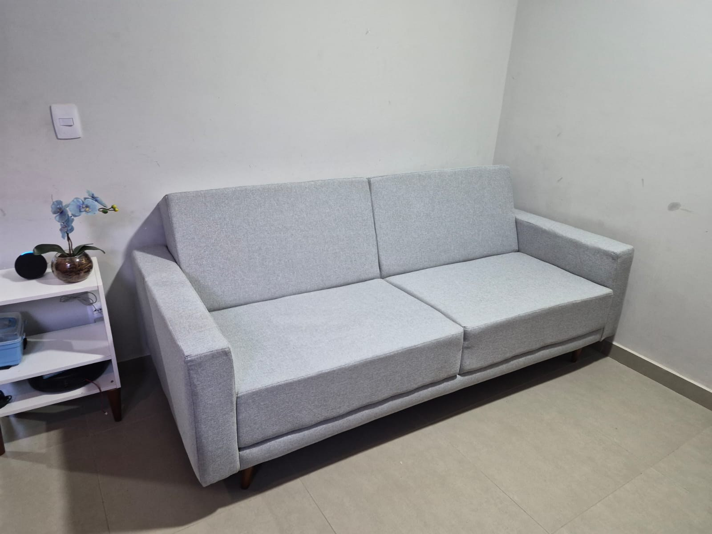

Sofás, poltronas
e cadeiras
Reforma de estofados para renovar o revestimento e o conforto dos móveis que acompanham sua rotina.
Quero reformar meu móvelMAIS DE 30 ANOS DE EXPERIÊNCIA
Fabricação e reforma de estofados para sua casa, seu carro e sua empresa. Da peça que faz parte da sua história ao projeto que está começando.

Experiência que também
chega às empresas.
O QUE FAZEMOS
Fabricação e reformas em diferentes tipos de peças. Conte o que você precisa e vamos avaliar as possibilidades para o seu projeto.
Reforma de estofados para renovar o revestimento e o conforto dos móveis que acompanham sua rotina.
Quero reformar meu móvelTem uma ideia para um novo estofado? Compartilhe as medidas, as referências e a proposta do seu ambiente.
Vamos falar do meu projetoReformas de estofamentos de carros. Envie fotos da peça e informe o modelo do veículo para uma avaliação.
Consultar sobre meu carroRevestimentos e estofados de macas, poltronas e cadeiras para clínicas, hospitais, recepções e empresas.
Conhecer essa frenteTRABALHOS DA RENOVO
Da oficina ao ambiente pronto: conheça reformas, etapas de fabricação e registros dos estofados em vídeo. Toque nas fotos para ampliar.
Uma nova aparência para continuar fazendo parte da casa.
Quero renovar o meu também ↗Um olhar para o trabalho na oficina: estrutura, espuma, revestimento e a peça com suas almofadas.
SEU ESPAÇO, SUA IDENTIDADE
Estofados fazem parte da experiência de quem visita seu negócio. Conte para a Renovo o que você precisa para o seu espaço.
Falar sobre minha empresa ↗Dê o play para assistir. Use os controles para ativar o som, avançar ou ampliar a tela.
MAIS NO INSTAGRAM
Novos registros de reformas e fabricações são publicados no perfil da Renovo.
@renovoestofados ↗PARA CLÍNICAS, HOSPITAIS E EMPRESAS
Reformas e revestimentos de estofados para espaços de atendimento e equipamentos hospitalares.
Atuação em revestimentos e estofados. Os detalhes de cada projeto são avaliados no orçamento.
ANOS DE EXPERIÊNCIA
EM TAPEÇARIA E ESTOFADOS
PRAZER, SOMOS A RENOVO
Com mais de 30 anos de experiência, a Renovo atua na fabricação e reforma de estofados, atendendo projetos residenciais, automotivos e empresariais.
Estamos na região de São José dos Campos e atendemos o Vale do Paraíba, a Grande São Paulo e Campinas. Fale com a gente para alinhar o atendimento na sua cidade.
Conte com a nossa experiência ↗DO PRIMEIRO CONTATO AO SEU PROJETO
Envie fotos pelo WhatsApp, conte sua ideia e informe sua cidade. Para fabricação, compartilhe medidas e referências.
Alinhamos o tipo de serviço e os detalhes necessários para elaborar o orçamento.
Materiais, valores, prazo e logística são definidos com você antes de iniciar o trabalho.
Estamos na região de São José dos Campos e atendemos todo o Vale do Paraíba, a Grande São Paulo e Campinas. Informe sua cidade para combinar a logística do seu projeto.
Sim. Trabalhamos com fabricação e reformas de estofados, incluindo sofás, poltronas, cadeiras e estofamentos automotivos, empresariais e hospitalares. A viabilidade de cada peça é avaliada no contato.
Não realizamos higienização de sofás. Nosso trabalho é voltado à fabricação, reforma e revestimento de estofados.
Envie fotos da peça inteira e dos detalhes que precisam de atenção, sua cidade e uma breve descrição do que deseja. Para fabricação, inclua medidas aproximadas e referências. As fotos são enviadas diretamente na conversa do WhatsApp.
Prazo, disponibilidade, retirada, entrega e eventuais custos de transporte são combinados no orçamento, conforme o serviço e a região.
Sim. Atuamos com revestimentos e estofados para macas, mesas, poltronas e cadeiras. Envie fotos e descreva a necessidade para avaliarmos o escopo do trabalho.
VAMOS RENOVAR?
Um sofá para reformar, um carro para renovar ou um projeto para sua empresa. Fale diretamente com a Renovo.
(12) 99757-6819São José dos Campos e região
Vale do Paraíba · Grande São Paulo · Campinas
É SÓ CHAMAR
A conversa abre com uma mensagem pronta. É só revisar e enviar.